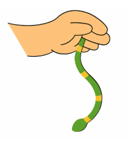

Welcome to the MuslimPhonics adventure! Here is how we guide your child, step by step, from their very first sound all the way to reading.

To learn to read, your child does not recite the alphabet. First, they discover the sounds that letters make. S is not called “ess”: it hisses “ssss”, like a snake!
English has 42 sounds. Your child discovers them one by one, in 7 stages called sets. Each sound comes with its own story and an action to copy: for S, the hand wiggles like a snake while we hiss “ssss”. The action helps the sound stay in memory for good.
Because with these six sounds, reading becomes real straight away. As soon as your child knows them, they can blend their first real words:
at, an, it, in, sat, sap, sit, sip, sin, tap, tan, tip, tin, pat, pan, pit, pip, pin, nap, nip, nitAnd by adding an s or putting two consonants together: ants, pants, snap, spin, taps, tips…
🎉 How proud they feel, reading on their own in the very first weeks!
Each book opens with a story that brings the sound to life and makes your child want to hear it again and again. Then every page has a clear mission:
Listening and repeating. Your child says the sound, spots it in words and builds their vocabulary.
Learning with the hands. Your child shapes the letter with play dough. Every child learns in their own way: some remember what they see, others what they hear, others need to move. By using all the senses (sight, hearing, speech, touch and movement), the method adapts to every child. That is why this multisensory approach is especially recommended for neurodivergent children: no child is left behind.
Tracing. Your child follows the model and writes the letter with the right movement.
Reading at last! Your child places a finger on each dot and says the sound learnt in the story. Book after book, the sounds join together to make words.
💡 The secret of English: CVC words. A CVC word is a consonant, a vowel, a consonant: cat, sun, pig, bed… Each letter sounds exactly as it was learnt; your child simply blends the sounds. Unlike languages full of silent letters, such as French, English has hundreds of CVC words your child can read from the very first sounds. A wonderful springboard into reading! To find out more and practise: The famous CVC Cards (article in French).
Listening and understanding. Your child listens to the instructions in English, then tries to do what is asked. No need to understand everything: sometimes one word is enough. They hear snake and green, and their brain makes the link: they colour the snake green! That is how the ear gets sharper. The voices change on purpose from one story to the next, so your child gets used to different English accents, from the easiest to the hardest.
Daring to speak. Your child describes the picture out loud and records themselves. If needed, they can watch the model video for inspiration. And of course, they can repeat these activities as many times as they like.
💙 MuslimPhonics is a little family. Children send us their recordings and drawings, and we share them, with their parents' permission, in our album Our Little MuslimPhonics Family. A lovely motivation to keep going!
Keeping the sound close. One letter to stick in a little notebook by the bed, to look through for a few minutes before sleeping, and another on the bedroom wall. The sound settles in… without your child even noticing!
The big challenge. The goal: read the sounds quickly and without hesitating. With each story, your child moves forward on the path, until all 42 sounds are conquered!
The sounds are grouped into 7 sets. Each set brings new words to read.
| Set | Sounds |
|---|---|
| 1 | s, a, t, p, i, n |
| 2 | c/k, e, h, r, m, d |
| 3 | g, o, u, l, f, b |
| 4 | ai, j, oa, ie, ee, or |
| 5 | z, w, ng, v, oo (book), oo (moon) |
| 6 | y, x, ch, sh, th (thin), th (this) |
| 7 | qu, ou, oi, ue, er, ar |
Bienvenue dans l'aventure MuslimPhonics ! Voici comment nous accompagnons votre enfant, pas à pas, de son tout premier son jusqu'à la lecture.
Pour apprendre à lire, votre enfant ne récite pas l'alphabet. Il découvre d'abord les sons que font les lettres. Le S ne s'appelle pas « esse » : il siffle « ssss », comme un serpent !
L'anglais compte 42 sons. Votre enfant les découvre un par un, en 7 étapes appelées sets. Chaque son arrive avec sa propre histoire et un geste à mimer : pour le S, la main ondule comme un serpent pendant qu'on siffle « ssss ». Le geste aide le son à s'ancrer durablement dans la mémoire.
Parce qu'avec ces six sons, la lecture devient réelle tout de suite. Dès que votre enfant les connaît, il peut assembler ses premiers vrais mots :
at, an, it, in, sat, sap, sit, sip, sin, tap, tan, tip, tin, pat, pan, pit, pip, pin, nap, nip, nitEt en ajoutant un s ou en accolant deux consonnes : ants, pants, snap, spin, taps, tips…
🎉 Quelle fierté de lire tout seul, dès les premières semaines !
Chaque livre s'ouvre sur une histoire qui fait vivre le son et donne envie à l'enfant de l'entendre encore et encore. Ensuite, chaque page a une mission bien précise :
Écouter et répéter. Votre enfant prononce le son, le repère dans des mots et enrichit son vocabulaire.
Apprendre avec les mains. Il modèle la lettre en pâte à modeler. Chaque enfant apprend à sa façon : certains retiennent ce qu'ils voient, d'autres ce qu'ils entendent, d'autres encore ont besoin de bouger. En sollicitant tous les sens (la vue, l'ouïe, la parole, le toucher et le mouvement), la méthode s'adapte à chaque enfant. C'est pour cela que cette approche multisensorielle est particulièrement recommandée pour les enfants neuroatypiques : aucun enfant n'est laissé de côté.
Tracer. Il suit le modèle et écrit la lettre avec le bon geste.
Lire, enfin ! Il pose son doigt sur chaque point et prononce le son appris dans l'histoire. Au fil des livres, les sons se rejoignent et forment des mots.
💡 Le secret de l'anglais : les mots CVC. Un mot CVC, c'est une consonne, une voyelle, une consonne : cat, sun, pig, bed… Chaque lettre se prononce exactement comme on l'a apprise, il suffit d'enchaîner les sons. Contrairement au français, où les lettres muettes et les sons composés sont partout, l'anglais compte des centaines de mots CVC que l'enfant peut lire dès ses premiers sons. C'est un formidable tremplin vers la lecture ! Pour en savoir plus et vous entraîner : Les fameuses CVC Cards.
Écouter et comprendre. Votre enfant écoute la consigne en anglais, puis essaie de faire ce qu'on lui demande. Pas besoin de tout comprendre : parfois, un seul mot suffit. Il entend snake et green, et son cerveau fait le lien : il colorie le serpent en vert ! C'est ainsi que l'oreille s'affine. Les voix changent volontairement d'une histoire à l'autre pour que votre enfant s'habitue aux différents accents anglais, des plus faciles aux plus difficiles.
Oser parler. Votre enfant décrit l'image à voix haute et s'enregistre. S'il en a besoin, il peut regarder la vidéo modèle pour s'inspirer. Et bien sûr, il peut recommencer ces activités autant de fois qu'il le souhaite.
💙 MuslimPhonics, c'est une petite famille. Les enfants nous envoient leurs audios et leurs dessins, et nous les publions, avec l'accord des parents, dans notre album Our Little MuslimPhonics Family. Une belle motivation pour progresser !
Garder le son près de lui. Une lettre à coller dans un petit cahier près du lit, à feuilleter quelques minutes avant de dormir, et une autre au mur de sa chambre. Le son s'installe… sans même qu'il s'en rende compte !
Le grand défi. Le but : lire les sons vite et sans hésiter. À chaque histoire, votre enfant avance sur le chemin, jusqu'à conquérir les 42 sons !
Les sons sont regroupés en 7 sets. Chaque set apporte de nouveaux mots à lire.
| Set | Sons |
|---|---|
| 1 | s, a, t, p, i, n |
| 2 | c/k, e, h, r, m, d |
| 3 | g, o, u, l, f, b |
| 4 | ai, j, oa, ie, ee, or |
| 5 | z, w, ng, v, oo (book), oo (moon) |
| 6 | y, x, ch, sh, th (thin), th (this) |
| 7 | qu, ou, oi, ue, er, ar |
مَرْحَبًا بِكُمْ فِي مُغَامَرَةِ MuslimPhonics! إِلَيْكُمْ كَيْفَ نُرَافِقُ طِفْلَكُمْ، خُطْوَةً خُطْوَةً، مِنْ أَوَّلِ صَوْتٍ يَتَعَلَّمُهُ حَتَّى يَقْرَأَ.
لِيَتَعَلَّمَ طِفْلُكُمُ الْقِرَاءَةَ، لَا يَحْفَظُ الْأَبْجَدِيَّةَ أَوَّلًا، بَلْ يَكْتَشِفُ الْأَصْوَاتَ الَّتِي تُصْدِرُهَا الْحُرُوفُ. حَرْفُ S لَا نُسَمِّيهِ «إِسْ»، بَلْ يَصْفِرُ «سْسْسْ» مِثْلَ الثُّعْبَانِ!
فِي اللُّغَةِ الْإِنْجِلِيزِيَّةِ اثْنَانِ وَأَرْبَعُونَ صَوْتًا، يَكْتَشِفُهَا طِفْلُكُمْ وَاحِدًا تِلْوَ الْآخَرِ، عَلَى سَبْعِ مَرَاحِلَ تُسَمَّى sets. لِكُلِّ صَوْتٍ قِصَّتُهُ الْخَاصَّةُ وَحَرَكَةٌ يُقَلِّدُهَا: لِحَرْفِ S تَتَمَوَّجُ الْيَدُ مِثْلَ الثُّعْبَانِ وَنَحْنُ نَصْفِرُ «سْسْسْ». وَتُسَاعِدُ الْحَرَكَةُ عَلَى تَثْبِيتِ الصَّوْتِ فِي الذَّاكِرَةِ.
لِأَنَّ الْقِرَاءَةَ تُصْبِحُ حَقِيقِيَّةً فَوْرًا بِهَذِهِ الْأَصْوَاتِ السِّتَّةِ. فَبِمُجَرَّدِ أَنْ يَعْرِفَهَا طِفْلُكُمْ، يَسْتَطِيعُ أَنْ يُرَكِّبَ أُولَى كَلِمَاتِهِ الْحَقِيقِيَّةِ:
at, an, it, in, sat, sap, sit, sip, sin, tap, tan, tip, tin, pat, pan, pit, pip, pin, nap, nip, nitوَبِإِضَافَةِ حَرْفِ s أَوْ بِجَمْعِ حَرْفَيْنِ سَاكِنَيْنِ: ants, pants, snap, spin, taps, tips…
🎉 يَا لَهُ مِنْ فَخْرٍ أَنْ يَقْرَأَ وَحْدَهُ مُنْذُ الْأَسَابِيعِ الْأُولَى!
يَبْدَأُ كُلُّ كِتَابٍ بِـقِصَّةٍ تُحْيِي الصَّوْتَ وَتَجْعَلُ الطِّفْلَ يَرْغَبُ فِي سَمَاعِهِ مَرَّةً بَعْدَ مَرَّةٍ. ثُمَّ لِكُلِّ صَفْحَةٍ مُهِمَّةٌ وَاضِحَةٌ:
الِاسْتِمَاعُ وَالتَّكْرَارُ. يَنْطِقُ طِفْلُكُمُ الصَّوْتَ، وَيَتَعَرَّفُ عَلَيْهِ فِي الْكَلِمَاتِ، وَيُثْرِي مُفْرَدَاتِهِ.
التَّعَلُّمُ بِالْيَدَيْنِ. يُشَكِّلُ الْحَرْفَ بِالْعَجِينِ. فَكُلُّ طِفْلٍ يَتَعَلَّمُ بِطَرِيقَتِهِ: بَعْضُهُمْ يَتَذَكَّرُ مَا يَرَاهُ، وَبَعْضُهُمْ مَا يَسْمَعُهُ، وَبَعْضُهُمْ يَحْتَاجُ إِلَى الْحَرَكَةِ. وَبِاسْتِعْمَالِ كُلِّ الْحَوَاسِّ (النَّظَرِ وَالسَّمْعِ وَالنُّطْقِ وَاللَّمْسِ وَالْحَرَكَةِ) تَتَكَيَّفُ الطَّرِيقَةُ مَعَ كُلِّ طِفْلٍ. لِذَلِكَ يُنْصَحُ بِهَذَا الْأُسْلُوبِ الْمُتَعَدِّدِ الْحَوَاسِّ خَاصَّةً لِلْأَطْفَالِ ذَوِي التَّنَوُّعِ الْعَصَبِيِّ: لَا يُتْرَكُ أَيُّ طِفْلٍ خَلْفَ الْآخَرِينَ.
الْكِتَابَةُ. يَتْبَعُ النَّمُوذَجَ وَيَكْتُبُ الْحَرْفَ بِالْحَرَكَةِ الصَّحِيحَةِ.
وَأَخِيرًا، الْقِرَاءَةُ! يَضَعُ إِصْبَعَهُ عَلَى كُلِّ نُقْطَةٍ وَيَنْطِقُ الصَّوْتَ الَّذِي تَعَلَّمَهُ فِي الْقِصَّةِ. وَمَعَ تَوَالِي الْكُتُبِ، تَجْتَمِعُ الْأَصْوَاتُ وَتُكَوِّنُ كَلِمَاتٍ.
💡 سِرُّ اللُّغَةِ الْإِنْجِلِيزِيَّةِ: كَلِمَاتُ CVC. كَلِمَةُ CVC هِيَ حَرْفٌ سَاكِنٌ، ثُمَّ حَرْفُ عِلَّةٍ، ثُمَّ حَرْفٌ سَاكِنٌ: cat, sun, pig, bed… يُنْطَقُ كُلُّ حَرْفٍ تَمَامًا كَمَا تَعَلَّمَهُ الطِّفْلُ، وَيَكْفِي أَنْ يَصِلَ الْأَصْوَاتَ بَعْضَهَا بِبَعْضٍ. وَفِي اللُّغَةِ الْإِنْجِلِيزِيَّةِ مِئَاتُ الْكَلِمَاتِ مِنْ هَذَا النَّوْعِ، يَسْتَطِيعُ الطِّفْلُ قِرَاءَتَهَا مُنْذُ أَصْوَاتِهِ الْأُولَى. إِنَّهَا انْطِلَاقَةٌ رَائِعَةٌ نَحْوَ الْقِرَاءَةِ! لِلْمَزِيدِ وَلِلتَّدَرُّبِ: CVC Cards (مَقَالٌ بِالْفَرَنْسِيَّةِ).
الِاسْتِمَاعُ وَالْفَهْمُ. يَسْتَمِعُ طِفْلُكُمْ إِلَى التَّعْلِيمَاتِ بِالْإِنْجِلِيزِيَّةِ، ثُمَّ يُحَاوِلُ أَنْ يَفْعَلَ مَا يُطْلَبُ مِنْهُ. لَا يَحْتَاجُ إِلَى فَهْمِ كُلِّ شَيْءٍ: أَحْيَانًا تَكْفِي كَلِمَةٌ وَاحِدَةٌ. يَسْمَعُ snake وَgreen، فَيَرْبِطُ دِمَاغُهُ بَيْنَهُمَا، فَيُلَوِّنُ الثُّعْبَانَ بِالْأَخْضَرِ! هَكَذَا تَتَدَرَّبُ الْأُذُنُ. تَتَغَيَّرُ الْأَصْوَاتُ عَمْدًا مِنْ قِصَّةٍ إِلَى أُخْرَى، لِيَعْتَادَ طِفْلُكُمْ عَلَى لَهَجَاتٍ إِنْجِلِيزِيَّةٍ مُخْتَلِفَةٍ، مِنَ الْأَسْهَلِ إِلَى الْأَصْعَبِ.
الْجُرْأَةُ عَلَى الْكَلَامِ. يَصِفُ طِفْلُكُمُ الصُّورَةَ بِصَوْتٍ عَالٍ وَيُسَجِّلُ صَوْتَهُ. وَإِنِ احْتَاجَ، يُمْكِنُهُ أَنْ يُشَاهِدَ الْفِيدْيُو النَّمُوذَجِيَّ لِيَسْتَلْهِمَ مِنْهُ. وَطَبْعًا، يُمْكِنُهُ أَنْ يُعِيدَ هَذِهِ الْأَنْشِطَةَ كُلَّمَا أَرَادَ.
💙 MuslimPhonics عَائِلَةٌ صَغِيرَةٌ. يُرْسِلُ إِلَيْنَا الْأَطْفَالُ تَسْجِيلَاتِهِمْ وَرُسُومَاتِهِمْ، فَنَنْشُرُهَا، بِمُوَافَقَةِ الْوَالِدَيْنِ، فِي أَلْبُومِنَا Our Little MuslimPhonics Family. إِنَّهُ حَافِزٌ جَمِيلٌ لِلتَّقَدُّمِ!
إِبْقَاءُ الصَّوْتِ قَرِيبًا مِنْهُ. حَرْفٌ يُلْصِقُهُ فِي دَفْتَرٍ صَغِيرٍ قُرْبَ سَرِيرِهِ، يَتَصَفَّحُهُ دَقَائِقَ قَلِيلَةً قَبْلَ النَّوْمِ، وَآخَرُ عَلَى جِدَارِ غُرْفَتِهِ. فَيَسْتَقِرُّ الصَّوْتُ فِي ذَاكِرَتِهِ… دُونَ أَنْ يَشْعُرَ!
التَّحَدِّي الْكَبِيرُ. الْهَدَفُ: أَنْ يَقْرَأَ الْأَصْوَاتَ بِسُرْعَةٍ وَدُونَ تَرَدُّدٍ. مَعَ كُلِّ قِصَّةٍ يَتَقَدَّمُ طِفْلُكُمْ فِي الطَّرِيقِ، حَتَّى يُتْقِنَ الْأَصْوَاتَ الِاثْنَيْنِ وَالْأَرْبَعِينَ!
جُمِعَتِ الْأَصْوَاتُ فِي سَبْعِ مَجْمُوعَاتٍ، وَكُلُّ مَجْمُوعَةٍ تَأْتِي بِكَلِمَاتٍ جَدِيدَةٍ لِلْقِرَاءَةِ.
| الْمَجْمُوعَةُ | الْأَصْوَاتُ |
|---|---|
| 1 | s, a, t, p, i, n |
| 2 | c/k, e, h, r, m, d |
| 3 | g, o, u, l, f, b |
| 4 | ai, j, oa, ie, ee, or |
| 5 | z, w, ng, v, oo (book), oo (moon) |
| 6 | y, x, ch, sh, th (thin), th (this) |
| 7 | qu, ou, oi, ue, er, ar |